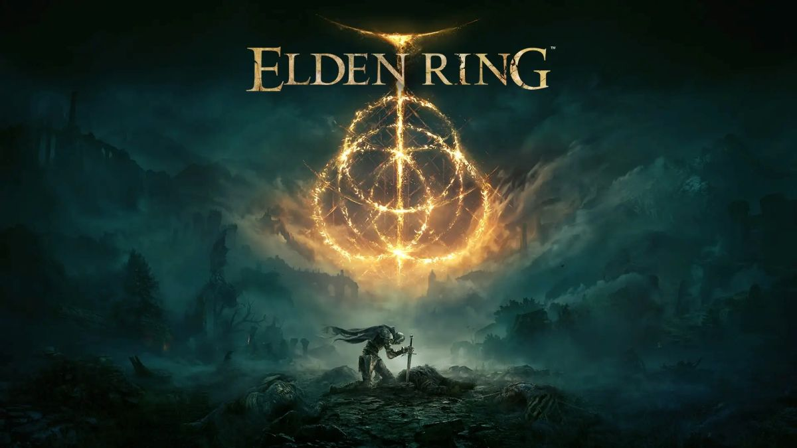

ライト
FHD 高画質
- 予算目安 15万円前後
- CPU Ryzen 7 5700X
- GPU RTX 5060
フルHDでELDEN RINGを快適に遊びたい人向けのバランス構成です。

アクションRPG / 中量級
ELDEN RINGを高画質で快適に遊ぶためのおすすめゲーミングPCを紹介。FHD〜WQHD向けの必要スペックを解説します。
RECOMMENDED BUILDS
ELDEN RINGは極端に重いゲームではありませんが、高画質や高fpsを狙うならCPUとGPUのバランスが重要です。
ライト
フルHDでELDEN RINGを快適に遊びたい人向けのバランス構成です。
ミドル
WQHDモニターで美しいフィールドを楽しみたい人向けです。
SHOP LINKS
必要なスペックや周辺機器を、気になったタイミングで軽く確認できます。
当サイトではアフィリエイト広告を利用しています。リンク先で商品を購入すると、運営者に収益が発生する場合があります。 Amazonのアソシエイトとして、当サイトは適格販売により収入を得ています。
RECOMMENDED
FHD〜WQHD / 高画質
BUDGET
15万〜25万円前後
POINT
ELDEN RINGは超重量級ではありませんが、安定した動作を重視するならCPUとGPUのバランスが大切です。
CAUTION
高解像度や高画質設定ではGPU負荷が上がるため、余裕のあるグラフィックボードを選ぶと安心です。